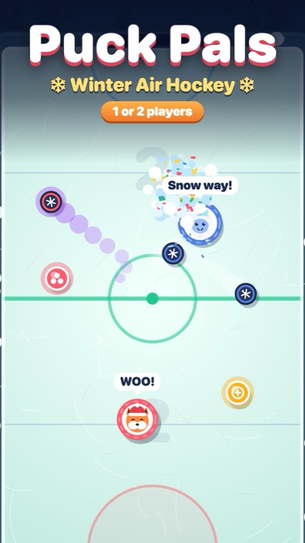

Puck Pals update: a twist for every Winter Cup rival

Puck Pals started as our entry for Playgama's two-player challenge, but most people play it alone against the CPU. So this update is about making the solo Winter Cup worth climbing.
What's new
- Every rival has a twist. Fast ice, a huge paddle, a power-up party, snowman bumpers, two pucks at once, gift rain, tiny goals, a sliding snow wall and gusts of wind. The twist is announced before each match.
- A prize meter. Every goal and every win fills a snowflake meter that pays out hats, puck skins and new pals.
- Losses still count. You earn coins even when you lose, and a rival you keep losing to plays a little gentler each time.
- Smoother flow. Matches now chain straight into the next one, and we fixed a stuck-puck bug and a rare blank screen between matches.
Still a two-player game
Press 2 PLAYERS and play head-to-head on one phone (each player drags in their own half) or one keyboard (WASD against the arrow keys).
Play the update free in your browser →Made by Holiday Play Studio, a small indie studio. We design our games with the help of AI coding tools (Claude Code), then play-test and polish them by hand. The games are free to play in your browser.